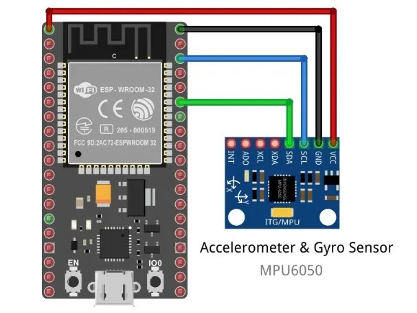

Discovery Project
Embedded Crash Detection and Notification Device
This project explores crash detection and notification to a web server through using an ESP32, accelerometer, and gyroscope. The goal was to gain a deeper understanding of embedded systems, programming in C++, using RTOS, and wireless networking. Ideally the module would be integrated into a wearable form factor in order to detect falling or impact collisions , which could especially benefit the elderly, cyclists, or motorcyclists.

Background
Why This Topic?
What initially drew me to this topic is the idea of a stroke detection and notification device. This device would have a fall detection module, in addition to various other biosensors. For the timeframe of the project, I believed it would have been better to just focus on the fall/crash detection module.
I am interested in wearable systems for health monitoring in general, and many elderly people in my family have suffered from strokes or severe injuries from falling. Many times they were alone and were left for hours before they were found injured, which can make a massive difference in recovery and treatment.
Process
How I Explored It
Before getting into the technical aspects of programming and configuring hardware, I began by thinking of the project from a thresholding approach, something I was familiar with from my other projects. E.g., past what acceleration/rotation denotes a fall? What change in acceleration/rotation denotes an impact? I also researched how other companies approach the issue, such as the Apple watch's and Tesla vehicle crash detection systems. After researching the relevant metrics for the project, I began familiarizing myself with RTOS, C++, and and wireless networking.
Findings
Key Findings
Summary of important findings
Key metric or finding label
Key metric or finding label
Key metric or finding label
Key metric or finding label
Reflection
What I Learned
Fill in later